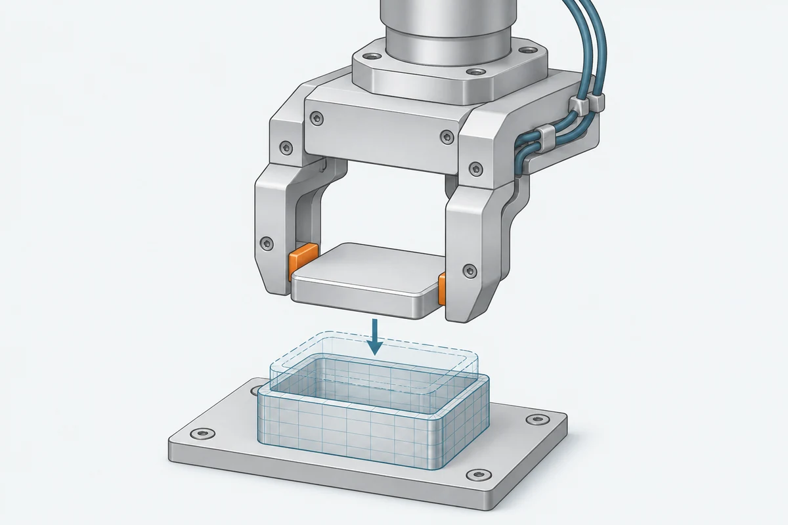

Isaac Lab 中的装配示教与触觉仿真 Assembly demonstrations and tactile simulation in Isaac Lab
基于 Isaac Lab 搭建机械臂接触装配场景，集成千觉机器人 Xense SDK 实现双指触觉仿真，开发自动示教、位姿扰动与受阻恢复流程，并记录多模态仿真数据。I built contact-rich assembly tasks in Isaac Lab with the Xense Robotics SDK for tactile simulation at both fingertips. The implementation includes scripted demonstrations, initial-pose perturbations, recovery from obstructions and multimodal episode recording.

回看一次受阻的仿真插入Inspecting an obstructed insertion in simulation
从初始位姿看对准偏差Start with the alignment
比较相同装配动作在不同工件初始位姿下的回放。在插入前查看工件相对夹爪的位姿及相机图像，可以判断偏差是否在接触之前就已经存在。Replay the same assembly routine with different initial part poses. Inspecting the part pose relative to the gripper and the camera views just before insertion shows whether a misalignment was already present before contact.
对照指尖与腕部观测Read fingertip and wrist observations together
两侧触觉观测描述各指尖与被夹工件的局部接触，腕部六维力／力矩描述经腕部传递的合力与合力矩。对照工件运动和插入指令，才能判断一次触觉变化发生在持件、推进还是回撤阶段。The two tactile observations describe local fingertip contact with the grasped part. The wrist wrench describes the net force and moment transmitted at the wrist. Part motion and insertion commands place a change in either signal in the hold, advance or withdrawal phase.
在回合记录中找恢复动作Find the recovery in the recorded episode
检测到受阻后，示教程序按任务状态选择回撤、重新对位或重抓。恢复前后的动作与观测连续保存。回放时既能定位新的动作指令从哪一步开始，也能观察工件在指令改变后如何运动。After an obstruction is detected, the routine withdraws, realigns or regrasps according to the task state. Keeping actions and observations on both sides of the transition makes it possible to identify the change in command and follow the subsequent part motion.
装配工位与触觉传感仿真Assembly workcell and tactile sensor simulation
集成机械臂、双指触觉夹爪与装配工件，配置工位及传感器。通过 Xense SDK 获取两侧指尖的模拟触觉响应，并关联机器人和工件状态，记录抓取与插入过程中的接触变化。The workcell integrates a robot arm, a two-finger tactile gripper, assembly parts and sensors. The Xense SDK provides simulated tactile responses at both fingertips, recorded alongside robot and workpiece states to capture changes in contact during grasping and insertion.
装配动作序列与自动示教Automated assembly demonstrations
开发覆盖工件抓取、插入、按压及盒盖装配的自动示教流程，将操作组织为拾取、搬运、对位和压合等阶段。各阶段记录动作与观测，支持在不同工件初始位姿下重复执行和回放。Scripted demonstrations cover part grasping, insertion, pressing and lid assembly, with stages for pickup, transport, alignment and pressing into place. Actions and observations are recorded at each stage for repeated execution and replay under different initial part poses.
位姿扰动与接触受阻恢复Pose perturbations and recovery from assembly obstructions
对工件初始位姿施加扰动，可在仿真中引入不同程度的对位偏差。检测到受阻后，控制器根据任务状态回撤、重新对准或重抓，再继续装配。示教序列保留受阻前后的动作和触觉观测，可据此回看接触变化与纠偏过程。Perturbations to the initial part pose introduce variations in alignment. When the controller detects an obstruction, it retracts, realigns or regrasps the part according to the task state before resuming assembly. The demonstration retains actions and tactile observations before and after the obstruction so that changes in contact can be examined alongside the recovery motion.
多模态记录与动作观测配对Multimodal recording and action–observation alignment
每个仿真回合单独保存为 HDF5 记录，包含双相机图像、机器人状态与动作、腕部六维力／力矩以及双指触觉。时间戳、坐标系和动作与观测的配对遵循统一约定。批量采集支持过程预览、记录完整性检查和异常回合隔离，原始记录可进一步转换为训练数据格式。Each simulated episode has an HDF5 record containing two camera views, robot states and actions, wrist force/torque measurements and tactile observations from both fingers. The records use consistent conventions for timestamps, coordinate frames and action–observation pairing. Batch collection supports previews, integrity checks and isolation of anomalous episodes before conversion to training formats.